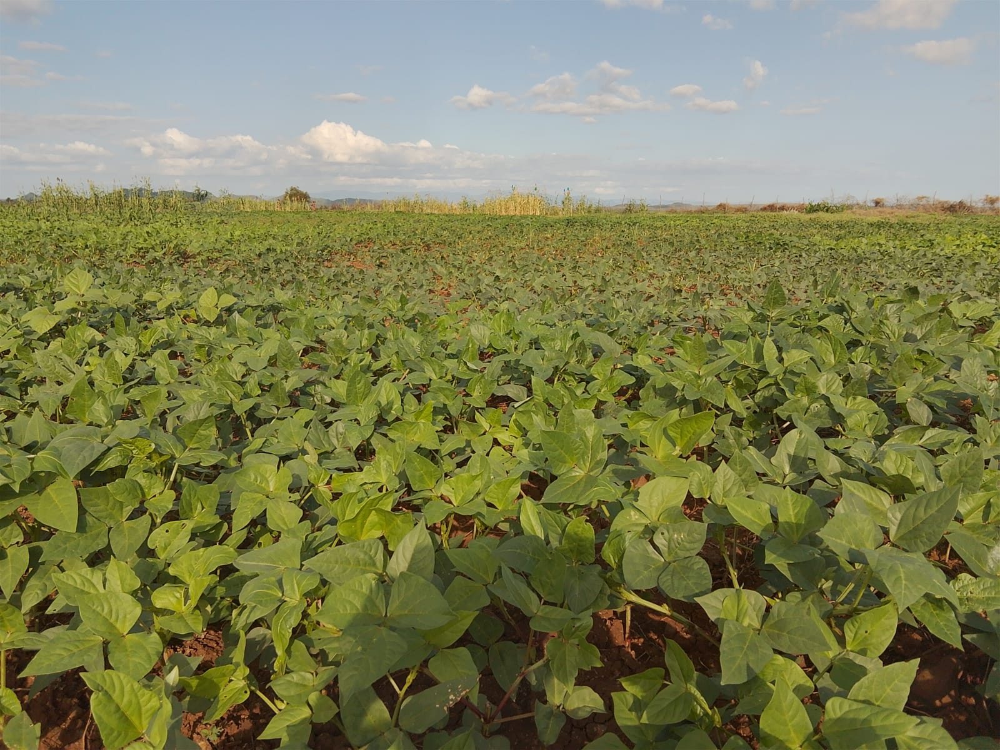

At Kalobeyei Youth Integrated Farmers Association (KYIFA), we believe agriculture is more than farming — it is the foundation of food security, income, and community resilience. Our Agriculture & Livelihood Development program empowers youth and families with practical skills, sustainable farming knowledge, and modern agricultural practices that improve productivity while protecting the environment.
Through climate-smart agriculture, organic farming, and community cooperation, we are building a future where young farmers can feed their families, earn a living, and care for the land for generations to come.
01.
From Soil To Table
We support the entire farming journey — from preparing the soil, planting quality seeds, nurturing crops, harvesting, and delivering fresh produce to households and local markets. This approach ensures food security, better nutrition, and improved income for farmers while reducing food shortages in the community.
02.
Organic Vegetables
KYIFA promotes the production of healthy, chemical-free vegetables using organic manure, compost, and natural pest control methods. Organic farming improves soil health, protects the environment, and provides safer, more nutritious food for families and markets.
03.
Rooted in Nature
Our farming methods work in harmony with nature. We encourage crop rotation, soil conservation, water harvesting, and planting drought-resistant crops. These practices help farmers adapt to climate change while maintaining long-term productivity of the land.
04.
Organic Growth
We focus on sustainable growth — increasing food production and income without damaging the environment. Through training, agribusiness support, and community farming initiatives, youth gain the knowledge and confidence to turn agriculture into a reliable source of livelihood.
Common Questions Answered
Smart Irrigation Systems
The program aims to help youth and families improve food production, gain practical farming skills, and create reliable sources of income through sustainable and climate-smart agricul
The program is open to youth, women, vulnerable households, and community members who are interested in farming, improving food security, and building sustainable livelihoods.
No. The program is designed for both beginners and experienced farmers. Training starts from basic farming knowledge and progresses to more advanced sustainable agriculture practices.
Participants learn land preparation, planting techniques, irrigation methods, soil management, pest control, harvesting, storage, and sustainable farming practices.
Yes. The program promotes drought-resistant crops, water conservation, irrigation techniques, and climate-smart farming to help farmers continue producing even during dry periods.
Yes. The program encourages group farming, kitchen gardening, sack farming, and participation in community demonstration farms where youth can learn and practice farming.
The program supports growing vegetables, cereals, legumes, fruits, and other climate-suitable crops that improve both food security and income generation.
By helping families grow diverse crops, improve farming productivity, and reduce crop losses, the program ensures households have enough nutritious food throughout the year.
Participants are trained in agribusiness skills such as budgeting, marketing, value addition, and market access. This helps farmers sell their produce, reduce losses, and generate stable income.
The Environmental Protection & Ecosystem Restoration program focuses on protecting natural resources and rebuilding damaged ecosystems in Kalobeyei and surrounding areas. Environmental challenges such as deforestation, land degradation, climate change, and poor waste management threaten livelihoods and community well-being. Through this program, KYIFA empowers youth and communities to restore ecosystems, conserve biodiversity, and adopt sustainable environmental practices. By working together, we aim to create a cleaner, greener, and more resilient environment for present and future generations.
01.
Tree Planting & Land Restoration
We promote tree planting and rehabilitation of degraded land to restore soil fertility, prevent erosion, and improve environmental balance. Trees provide shade, improve rainfall patterns, and support biodiversity while helping communities combat climate change.
02.
Community Environmental Awareness
The program educates youth and communities on environmental conservation, climate change, and sustainable resource use. Awareness activities include clean-up campaigns, environmental training, and community dialogues that encourage responsible environmental behavior.
03.
Waste Management & Clean Environment
We encourage proper waste disposal, recycling, and reduction of environmental pollution. Communities are trained on safe waste handling, composting organic waste, and keeping public spaces clean to promote health and environmental sustainability.
04.
Climate Action & Ecosystem Protection
KYIFA empowers youth as climate action leaders by promoting sustainable land use, biodiversity protection, water conservation, and eco-friendly practices that help communities adapt to climate change and protect natural ecosystems.

Clean Water, Healthy Communities
Access to clean water and proper sanitation is essential for health, dignity,
and community well-being. In many parts of Kalobeyei, water scarcity, poor
sanitation, and limited hygiene awareness continue to pose serious challenges.
KYIFA’s Water, Sanitation & Hygiene program works with youth and communities
to improve access to safe water, promote good hygiene practices, and develop
sustainable water management solutions for long-term resilience.
01.
Safe Water Access
We support communities in improving access to clean and safe water through
protection of water sources, water harvesting, and small-scale water
systems that ensure reliable supply for households and farms.
02.
Hygiene Education & Awareness
The program promotes proper hygiene practices such as handwashing, safe
water storage, and sanitation awareness to prevent waterborne diseases and
improve public health in the community.
03.
Sanitation & Community Health
We encourage safe sanitation practices, proper waste disposal, and the use
of hygienic facilities to reduce environmental contamination and promote
healthier living conditions.
04.
Sustainable Water Management
KYIFA promotes responsible water use, conservation, and protection of
local water catchment areas to ensure long-term water sustainability and
resilience against drought and water scarcity.
Protecting Water Sources, Improving Health
Access to clean water and safe sanitation is essential for health, dignity, and
sustainable development in Kalobeyei. Yet seasonal droughts, land degradation,
and limited infrastructure often lead to water shortages and increased
waterborne diseases. KYIFA’s Watershed Management & Sanitation program works
with youth, community leaders, and partners to protect water catchment areas,
improve safe water access, promote hygiene awareness, and strengthen
community-led solutions for long-term water sustainability.
01.
Water Source Protection
We help communities protect rivers, wells, and water points by reducing
pollution, restoring degraded areas, and promoting good practices around
water sources to keep water clean and reliable.
02.
Clean Water Access
The program supports practical solutions such as water harvesting, safe
storage, and improved water point management to increase access to clean,
safe, and dependable water for households and schools.
03.
Sanitation & Hygiene Promotion
We promote hygiene education, handwashing practices, and safer sanitation
behaviors to reduce waterborne diseases and improve community health—especially
for children and vulnerable families.
04.
Water Conservation & Capacity
KYIFA builds local skills in water conservation and disease prevention by
training youth and community groups on responsible water use, basic
maintenance, and preparedness during drought and emergencies.
Common Questions Answered
Watershed Management & Sanitation
The main goal is to protect local water sources, increase access to clean
water, improve sanitation and hygiene practices, and strengthen community
capacity for sustainable water management in Kalobeyei.
A watershed is the area of land that collects and channels rainwater into
rivers, wells, and water points. Protecting it matters because damaged land
and pollution reduce water quality and quantity, leading to shortages and
disease.
We support practical solutions like protecting water points, promoting water
harvesting, encouraging safe storage, and strengthening community management
to make water more reliable and safer for daily use.
We promote regular handwashing with soap, safe water storage, household
cleanliness, and proper sanitation behaviors to reduce diarrhea and other
waterborne diseases.
Poor sanitation can contaminate soil and water sources, spreading disease.
Improved sanitation reduces pollution, protects water quality, and keeps
families healthier.
The program is open to youth, women, households, schools, and community
groups. We encourage inclusive participation because clean water and hygiene
benefit everyone.
We promote water conservation, water harvesting, protection of catchment
areas, and preparedness measures that help communities manage scarcity and
reduce health risks during dry seasons.
It means training youth and community members with skills to protect water
sources, maintain basic water systems, practice hygiene, and lead
community-based solutions without relying fully on external support.
Households can keep water safe by using clean containers, covering storage
containers, avoiding dipping dirty cups or hands inside, and practicing
regular container cleaning and safe handling.
Empowering Women and Girls, Strengthening Communities
Women and girls in Kalobeyei face many barriers that limit their safety, education,
health, and economic opportunities. Early marriage, gender-based violence (GBV),
stigma around menstruation, and unequal access to resources continue to affect
families and community development. KYIFA’s Gender Empowerment program promotes
dignity, protection, and equal opportunity by supporting women and girls with
practical skills, leadership development, health education, and community action
that includes men and boys as partners for positive change.
01.
Skills & Economic Empowerment
We equip women and girls with practical life and livelihood skills to increase
self-reliance, improve income opportunities, and reduce vulnerability caused by
economic dependence.
02.
Protection & GBV Prevention
The program raises awareness on gender-based violence, supports survivors
through safe referrals, and strengthens community systems that promote safety,
respect, and accountability.
03.
Menstrual & Reproductive Health
We promote menstrual hygiene management and reproductive health education so
girls and women can live with dignity, stay in school, and make informed
decisions about their health and well-being.
04.
Leadership & Community Voice
KYIFA supports women and girls with leadership training, mentorship, and safe
spaces to build confidence, participate in decision-making, and amplify their
voices in community development.
Common Questions Answered
Gender Empowerment
The main goal is to promote equality, dignity, and safety by increasing
access to skills, health education, protection services, and leadership
opportunities for women and girls in Kalobeyei.
The program welcomes women, girls, youth, community leaders, and also men
and boys—because gender equality is strongest when the whole community is
involved.
GBV means gender-based violence—harm directed at someone because of their
gender. We prevent it through awareness sessions, promoting respectful
relationships, strengthening reporting and referral pathways, and engaging
men and boys as allies.
We provide safe, confidential guidance and connect survivors to trusted
services such as medical care, psychosocial support, legal support, and
protection partners where available.
Menstrual hygiene affects dignity, health, and school attendance. By
promoting menstrual health education and access to proper hygiene
information, we help girls stay confident, safe, and active in school and
community life.
When women and girls have skills and income opportunities, they are less
dependent on others for survival. This can reduce risks such as exploitation,
harmful relationships, and early marriage driven by financial hardship.
We support leadership training, mentorship, safe discussion spaces, and
community engagement so women and girls can participate in decisions, speak
up on community issues, and lead positive change initiatives.
We involve men and boys through dialogue sessions, community education, and
activities that promote respect, shared responsibility, and positive
masculinity—supporting safer homes and healthier communities.
Communities can expect improved safety and awareness, stronger support for
women and girls, better health and dignity outcomes, and increased
participation of women in leadership and community development.
Sports and culture create safe spaces where young people can connect, grow, and
thrive. In Kalobeyei’s diverse communities, many youth have limited opportunities
for recreation, creative expression, and positive social engagement. KYIFA’s
Sports & Cultural Activities program brings refugee and host community youth
together through games, arts, and cultural events that promote peace, confidence,
teamwork, and well-being. By celebrating talent and diversity, we strengthen
social cohesion and help prevent violence, idleness, and substance abuse.
01.
Inclusive Sports for Peace
We organize inclusive sports activities and tournaments that bring youth from
different backgrounds together to build friendships, teamwork, and mutual
understanding—using sport as a tool for peace.
02.
Talent & Creative Expression
The program supports youth to express themselves through music, dance, drama,
poetry, and visual arts—helping them build confidence, cope with stress, and
develop positive identity and purpose.
03.
Cultural Exchange & Celebrations
We promote cultural exchange events where communities share traditions,
stories, and performances. This celebrates diversity and strengthens social
cohesion between refugees and host communities.
04.
Healthy Lifestyles & Youth Well-Being
KYIFA promotes healthy living through regular recreation, mentorship, and
positive peer engagement. These activities support mental well-being, reduce
risky behavior, and encourage discipline and goal-setting.
Common Questions Answered
Sports & Cultural Activities
The goal is to promote unity, peace, and youth well-being by creating safe
spaces for sports, arts, and cultural activities that bring communities
together and support positive youth development.
The program is open to youth from both refugee and host communities,
including girls and boys. We encourage inclusive participation for all
backgrounds and abilities.
Sports create teamwork and shared goals, helping youth build friendships
across communities. This reduces stereotypes, improves communication, and
strengthens peaceful coexistence.
We support music, dance, drama, poetry, storytelling, art, and cultural
festivals—activities that allow youth to express talent, celebrate identity,
and connect across cultures.
Regular sports and creative expression reduce stress, build self-esteem,
encourage discipline, and provide a positive support network—helping youth
feel valued and motivated.
By engaging youth in structured, meaningful activities, the program reduces
idleness and negative peer pressure. Mentorship and positive group
participation also help youth make healthier choices.
Yes. We actively promote safe and inclusive spaces for girls and young
women to participate in sports and cultural activities, build confidence,
and develop leadership through teamwork and talent.
Communities in Kalobeyei and surrounding areas often face humanitarian
challenges such as drought, floods, disease outbreaks, and displacement.
During these difficult times, fast and coordinated action is critical.
KYIFA’s Humanitarian & Emergency Support program mobilizes trained youth
volunteers and partners to deliver life-saving assistance, protect the most
vulnerable, and support recovery. Through preparedness, early response, and
community-led rebuilding, we help families regain stability, dignity, and
resilience after emergencies.
01.
Emergency Relief & Essential Supplies
We coordinate rapid distribution of critical items such as food, safe
water, hygiene kits, and basic necessities to families affected by
disasters—prioritizing the most vulnerable.
02.
Preparedness & Early Response
The program strengthens community readiness through awareness, basic
training, and early warning actions that reduce risks and enable faster,
safer responses when emergencies occur.
03.
Recovery & Community Rebuilding
We support post-crisis recovery through community-led rebuilding,
restoration of livelihoods, and practical assistance that helps families
return to safe and stable living conditions.
04.
Psychosocial Support & Protection
KYIFA promotes emotional well-being and protection by offering basic
psychosocial support, safe spaces, and referrals—helping individuals and
families cope with stress, loss, and trauma during and after crises.
Common Questions Answered
Humanitarian & Emergency Support
The goal is to deliver timely, life-saving assistance during crises,
reduce disaster impacts through preparedness, and support community
recovery and resilience after emergencies.
We respond to droughts, floods, disease outbreaks, displacement, and
other humanitarian situations that threaten lives, health, and
livelihoods in Kalobeyei and nearby areas.
Priority is given to the most vulnerable, including children, women,
elderly persons, persons with disabilities, and families severely
affected by the crisis.
We provide awareness, basic training, and early warning support so
communities understand risks, take preventive actions, and respond
quickly and safely when emergencies occur.
Assistance may include food supplies, safe water, hygiene kits,
emergency items, and basic support to help families meet urgent needs
and stay safe during the crisis.
We support community-led rebuilding, restoration of livelihoods, and
practical assistance that helps families recover, regain stability,
and rebuild safer living conditions.
Psychosocial support helps individuals cope with stress, fear, and
trauma caused by emergencies. It promotes emotional well-being,
resilience, and healthy recovery for affected families.
Community members can participate as volunteers, support awareness
efforts, share early warnings, and collaborate in preparedness and
recovery activities that strengthen collective resilience.
The program aims to save lives, reduce suffering, strengthen
preparedness, and support faster recovery—building safer, more
resilient communities in the face of future emergencies.
Kalobeyei is home to diverse communities, including refugees and host
populations from different cultural and ethnic backgrounds. While diversity
is a strength, competition over resources, misunderstandings, and historical
tensions can sometimes lead to conflict. KYIFA’s Peace & Conflict Mitigation
program empowers youth and communities to prevent violence, resolve disputes
peacefully, and promote unity. Through dialogue, education, and collaboration,
we strengthen peaceful coexistence and build resilient, harmonious communities.
01.
Peace Education & Awareness
We provide education on peaceful coexistence, tolerance, and mutual respect,
helping communities understand diversity, reduce prejudice, and prevent
conflicts before they arise.
02.
Conflict Resolution & Mediation
The program promotes community-led mediation and dialogue to address local
disputes peacefully, encouraging constructive communication and nonviolent
solutions.
03.
Youth Leadership for Peace
We train youth as peace ambassadors equipped with skills in communication,
leadership, and conflict transformation, empowering them to lead positive
change within their communities.
04.
Community Dialogue & Reconciliation
KYIFA organizes peace dialogues, cultural exchange, and reconciliation
activities that bring communities together, rebuild trust, and strengthen
unity across diverse groups.
Common Questions Answered
Peace & Conflict Mitigation
The goal is to promote peaceful coexistence, prevent violence, and
strengthen unity by empowering communities to resolve conflicts through
dialogue, understanding, and nonviolent approaches.
The program addresses community disputes, resource-based conflicts,
cultural misunderstandings, and tensions between different groups within
Kalobeyei and surrounding areas.
Peace education promotes respect, tolerance, and understanding of
diversity, helping individuals develop positive attitudes and skills to
manage disagreements peacefully.
Community mediation is a peaceful process where trained individuals help
conflicting parties discuss issues openly, understand each other, and
reach fair, nonviolent solutions.
Youth are key drivers of change. When empowered with peace and leadership
skills, they can influence positive behavior, prevent violence, and
promote unity within their communities.
Peace dialogues create safe spaces for communities to share concerns,
build trust, resolve misunderstandings, and work together toward common
goals of harmony and coexistence.
Yes. The program encourages participation of youth, elders, women, and
community leaders in peace dialogues, mediation training, and unity
initiatives.
The program aims to reduce conflict, strengthen social cohesion, promote
tolerance, and build peaceful, resilient communities where diversity is
respected and valued.
By promoting continuous dialogue, youth leadership, community
collaboration, and conflict resolution skills, the program builds
sustainable foundations for long-term peace and stability.